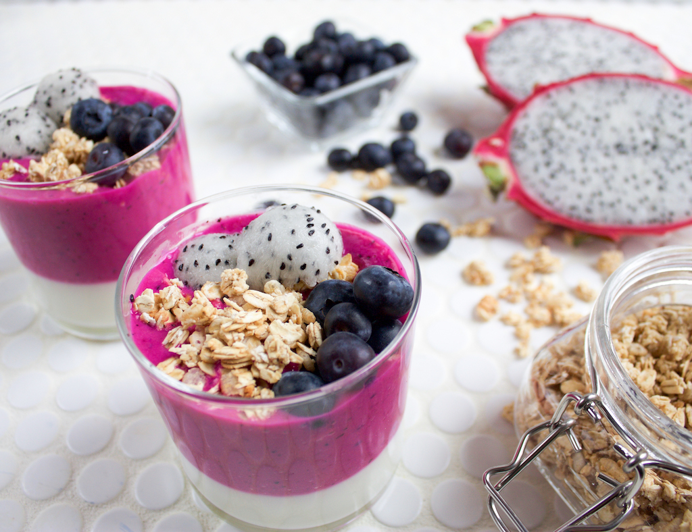

White-fleshed pitahaya (Hylocereus undatus) is commonly called dragon fruit or strawberry pear. In Latin America, this member of the cactus family is also known as pitahaya blanca. Both the juicy white flesh and the tiny black seeds distributed across the flesh of the dragon fruit are edible and nutritious. Dragon fruit is also low in calories and can offer several health benefits when consumed in moderation and as part of a balanced diet.In addition to its nutritional value and health promoting effects, the dragon fruit is praised for its appetizing crunchy texture and refreshing, sweet flavor which is like a cross between kiwi and pear. To preserve most of its flavor and nutrients, the dragon fruit is usually eaten raw as a healthy snack or it is pureed into smoothies. The rest of this article provides details of the nutritional value, calorie count and the health benefits of the dragon fruit. A 100-gram (3.5 oz) serving of white-fleshed pitahaya provides an estimated 21 milligrams of vitamin C, which corresponds to 34% of the daily value (DV) set for vitamin C. By way of comparison, this is less than half the amount of vitamin C found in an equal serving of oranges but more than three times the amount of vitamin C found in carrots. Vitamin C is perhaps best known for its ability to strengthen the immune system, but it also offers many other health benefits. When you eat dragon fruit or other foods that contain vitamin C, you boost your body's natural ability to get rid of heavy metals and other toxins, promote the healing of your body's cells, and improve your ability to cope with stress. Vitamin C is also an important antioxidant that is vital for overall good health and beautiful skin. Due its nutritional profile, dragon fruit can be used as a natural remedy for constipation. Dragon fruit seeds, in particular, appear to have strong laxative properties and can therefore be highly effective at at stimulating bowel movement. One of the nutrients that contributes to the laxative properties of the dragon fruit is fiber. A 100-gram portion of dragon fruit delivers 3 grams of fiber, which is equivalent to 12% of the daily reference value for dietary fiber. Furthermore, dragon fruit seeds contain polyunsaturated fatty acids which have been shown to exert laxative effects.
Nutrition facts for red-skinned, white-fleshed dragon fruit (Hylocereus undatus) are provided per 100 grams in the chart below. Note that the nutrition facts for red-skinned, red-fleshed pitahaya (Hylocereus polyrhizus or pitahaya roja) are slightly different. Similarly, the nutritional value of the yellow-skinned dragonfruit variety (Selenicereus megalanthus or pitahaya amarilla) is somewhat different. The nutrition facts provided below include both the absolute amount and the percent daily value for each nutrient.
| Nutrients | amount per 100 gram | % Daily value | Comments |
|---|---|---|---|
| Water | 87 g | NA | Very high water content |
| Protein | 1.1 g | 2.1% | - | Fat | 0.4 g | NA | Contains practically no fat | Carbohydrates | 11.0 g | 3.4% | - | Fiber | 3 g | 12% | Very good source of dietary fiber | Vitamin B1 | 0.04 mg | 2.7% | - | Vitamin B2 | 0.05 mg | 2.9% | - | Vitamin B3 | 0.16 mg | 0.8% | - | Vitamin c | 20.5 mg | 34.2% | Contains more than 3 times the amount of vitamin c foumd in carrots | Calcium | 8.5 mg | 0.9% | - | Iron | 1.9 mg | 10.6% | A good source of iron | Phosphorus | 22.5 mg | 2.39% | - | Zinc | NA | NA | - |